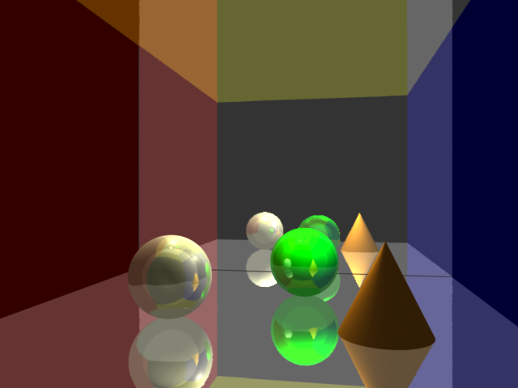
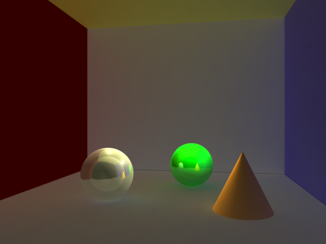
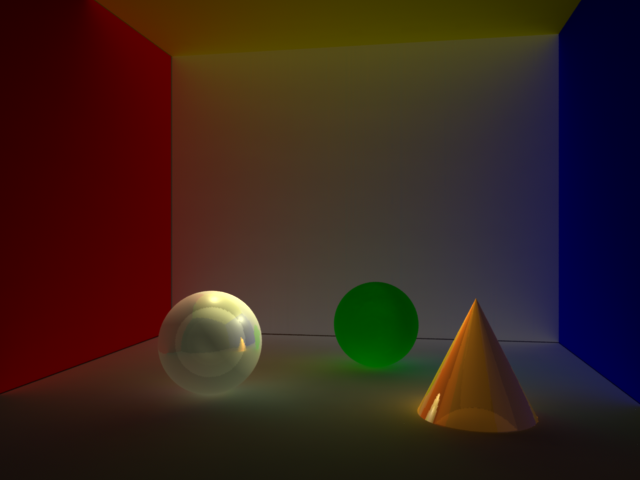
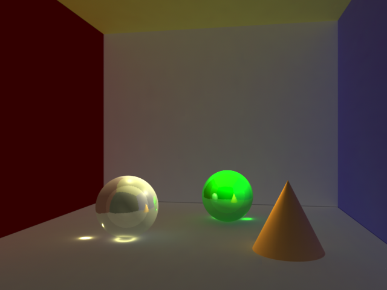
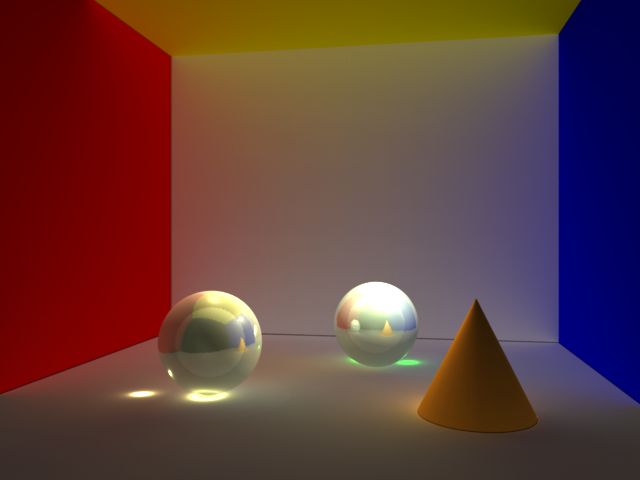
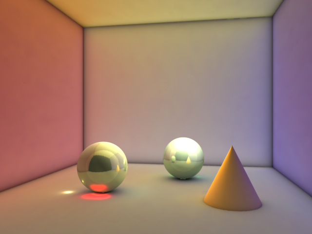
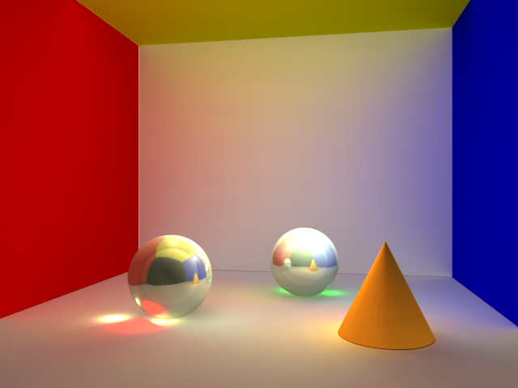
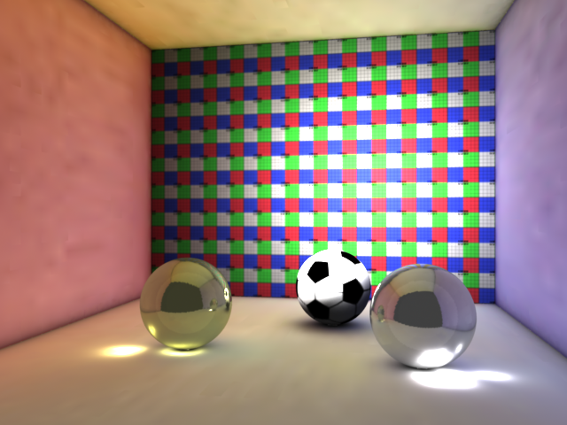
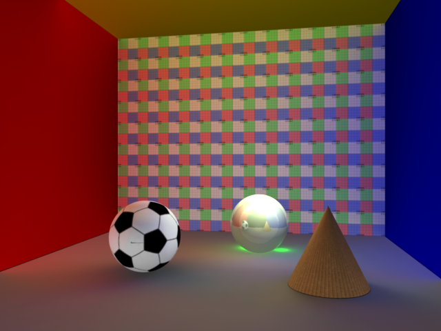

Second assignment for our advanced graphics course.
HTML Report for this project can be found here.
This section lays out the directory structure for the project.
| Subproblem | Directories |
|---|---|
| Recursive Ray Tracer | rrt/ |
| Adding color bleeding | cb1/, cb2/ |
| Adding caustics | cst1/, cst2/ |
| Adding area lights, soft shadows | alss1/, alss2/ |
| Adding textures | tex1/, tex2/ |
The directories ending in '1' are the ones corresponding to raytracing methods. The directories ending in '2' are the ones corresponding to point-based methods.
The best outputs for each part were collected and put in the renders/ directory
These instructions for running the code apply to every directory.
Each directory contains, at the very least, some RIB files, some shader language files and a Makefile. Run the code with the command
make
The result will be a TIFF file named
rrt.tif
which can be viewed like any other image.
To clean up the files generated in the wake of compiling and running the code, run
make clean
I get a "R90011" error: Renderman can't find a framebuffer because the RMANFB global variable has not been set. Assuming you are on a Linux system, do export RMANFB=x11 to tell it to use X11 as the framebuffer.
To write a recursive ray tracer with hard shadows, we added a call to transmission() in the shader for pointlight and wrote a recursive raytracer shader for specular surfaces (specsurf). For diffuse surfaces we
simply used the inbuilt matte shader.
First part (rendering using ray tracing).
To add color bleeding we wrote our own shader for diffuse surfaces (diffsurf) in which we made a call to indirectdiffuse.
To add caustics we used photon mapping. First we generate the photon map using the ptc.rib RIB file, then we use that photon map in the rrt.rib main RIB file. We also added a call to the photonmap shader function in the diffsurf shader.
To add area lighting we used the plausibleArealight shader taken from the RenderMan examples directory. To add soft shadows we used ambient occlusion. Specifically, we called the occlusion function, which is a standard RenderMan Shader Language function.
To add textures, we wrote a shader for textured surfaces called texturesurf. It is more or less the same as diffsurf except that it calls the texture function which again is part of the RSL standard library.
Second part (rendering using point based techniques).
To add color bleeding we generated a point cloud using the file ptc.rib and used that very point cloud in rrt.rib.
To add caustics we merged the methods for creating caustics and for having color bleeding through point based methods. So we have three files: one generates the photon map (cpm.rib), one generates the point cloud for point based color bleeding (ptc.rib) and one is the main file (rrt.rib). For this art we added the call to photonmap() in the pointbasedcolorbleeding shader since it is now effectively the shader for diffuse objects.
To add area lighting, as above, we used the plausibleArealight shader. For soft shadows, we again used the occlusion method but this time with the "pointbased" parameter set to 1.
For texturing, we wrote a shader for textured surfaces called texturesurf, which simply adds a call to the texture() function in pointbasedcolorbleeding.sl.

In each of the following sections, the first image was generated via raytraced methods and the second was generated via point-based methods.
 
 
 
 
A number of shaders were taken from the RenderMan examples.
The Renderman docs were invaluable.
ViGIL, for letting us run 40-minute render jobs on their servers.
Our profs, for giving us access to PRMan, which is really awesome.